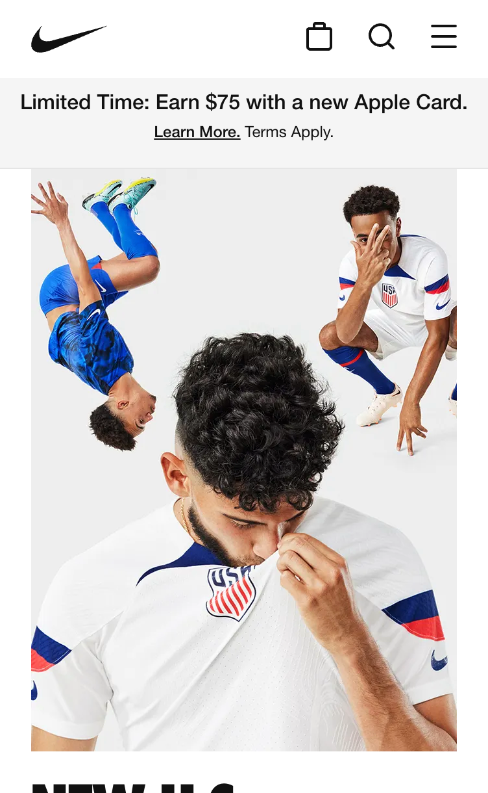
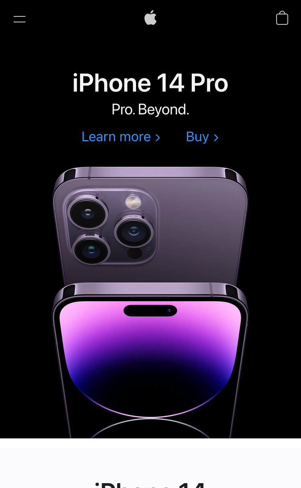

Fitt's Law
Delta Airlines
www.delta.com

Delta airlines uses the design principle of Fitt's Law with it's search feature From and To.
This feature is bigger, surrounded by clean space, making it easier to see and use to search for desired flights.
By creating a larger target for the user to access quicker, it creates a easier tool for the customer to book travel.
White Space
Nike
www.nike.com

Nike does an excellent job with the use of white space. This website is clean, not cluttered.
The head is minimal with no words essentially all white space. The image used is simple no clutter
and surrounded by clean space. Headings are short and simple. The less is more concept is applied at this website.
Contrast
Apple
www.apple.com

Apple's website is consistant with clean space as well as contrast. There is a repetitve pattern with black
white as the user scrolls through the page. This contrast use keeps the content easy to see, easy to read, and
maintain a consistant feel. The small application of color stays bright and with excellent contrast.